Matrix von Streudiagrammen
ScatterMatrix
Zusammenfassung
Eine Matrix von Streudiagrammen besteht aus mehreren paarweise verbundenen Punktdiagrammen der Variablen, die in Matrixformat dargestellt werden. Sie kann verwendet werden, um zu bestimmen, ob die Variablen korrelieren und ob diese Korrelation positiv oder negativ ist. Dieses Tutorial zeigt Ihnen, wie Sie eine Matrix von Streudiagrammen erstellen.
- 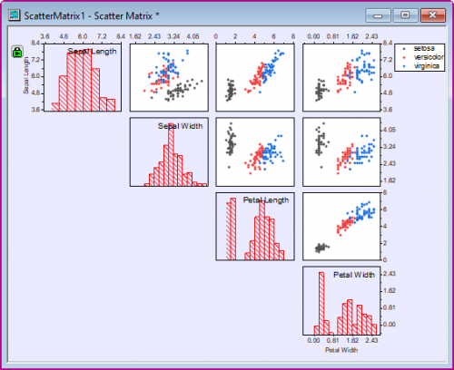
Was Sie lernen werden
- Matrix von Streudiagrammen mit Histogramm erstellen
- Eine Matrix von Streudiagrammen benutzerdefiniert anpassen
- Gruppierungsbereich zum Zeigen des Farbindex festlegen
- Verbergen von Punktdiagrammen unten/oben von der Diagonale festlegen
Schritte
Matrix von Streudiagrammen erstellen
- Öffnen Sie ein leeres Arbeitsblatt. Wählen Sie Hilfe: Ordner öffnen: Sample-Ordner ... im Menü, um den Ordner "Samples" zu öffnen. Öffnen Sie in diesem Ordner den Unterordner Statistics. Dort befindet sich die Datei Fisher's Iris Data.dat. Ziehen Sie diese Datei per Drag&Drop in das leere Arbeitsblatt, um sie zu importieren.
- Markieren Sie die Spalten (A) bis (D), aber nicht Spalte (E) und wählen Sie Zeichnen: Statistisch: Matrix von Streudiagrammen im Hauptmenü.
- Wählen Sie im Dialog Histogramm in der Auswahlliste die Option In diagonalen Zellen zeigen und dann Abwechseln in der Auswahlliste Hilfsstriche und Beschriftung zeigen.
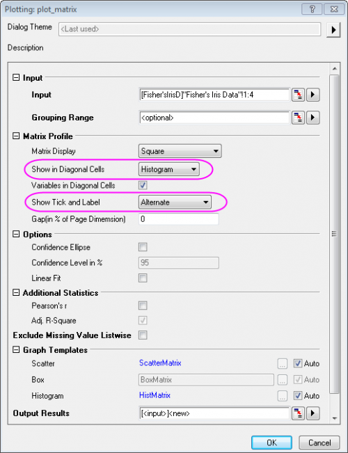
- Klicken Sie auf OK, um den Dialog zu schließen. Das Blatt PlotData1 für die Matrix von Streudiagrammen wird in der gleichen Arbeitsmappe wie die ursprünglichen Daten erzeugt. Es enthält die Daten für die verschiedenen Diagramme in der Matrix von Streudiagrammen. Sie können durch Klicken auf den zweiten Reiter mit dem Namen PlotData1 unten in der Arbeitsmappe auf das Blatt zugreifen. Das Diagramm sollte folgendermaßen aussehen:
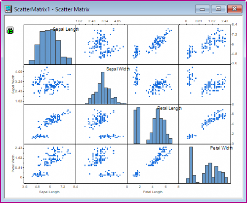
 |
Sie haben die Option, eine lineare Anpassung für jedes Punktdiagramm durchzuführen sowie das korrigierte R-Quadrat und zusätzlich Pearsons Korrelationskoeffizient (Pearsons r) zu berechnen. Seit Origin 2019 werden diese Statistiken in ein Blatt in der aktiven Mappe unter dem Namen ScatterMatrixStatsN ausgegeben.
Beschriften Sie jede Zeichnung in der Matrix von Streudiagrammen mit den Werten von Korr. R-Quadrat und/oder Pearsons r, indem Sie die Kontrollkästchen unter Zusätzliche Statistiken aktivieren.
- 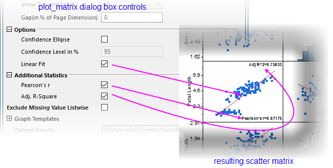
|
Matrix von Streudiagrammen benutzerdefiniert anpassen
In einer Matrix von Streudiagrammen gibt es mehrere Layer. Dieser Abschnitt erläutert, wie Sie die Hintergrundfarbe, den Typ und die Farbe der Datenzeichnungen sowie die Beschriftung der Achsenhilfsstriche der Matrix von Streudiagramme benutzerdefiniert anpassen. Seit Origin 2016 werden standardmäßig bei Ändern des Zeichnungsstils oder der Achseneinstellung eines Layers alle anderen Layer gleichzeitig auch geändert (siehe den Tipp am Ende dieses Abschnitts zum unabhängigen Bearbeiten.
- Klicken Sie zum Öffnen des Dialogs Details Zeichnung doppelt auf die Punktdaten. Um die Symbolfarbe zu ändern, klicken Sie auf das Auswahlmenü Symbolfarbe und wählen Sie eine Farbe der Option Individuell. Legen Sie den Typ und die Farbe des Symbols wie im folgenden Bild fest.
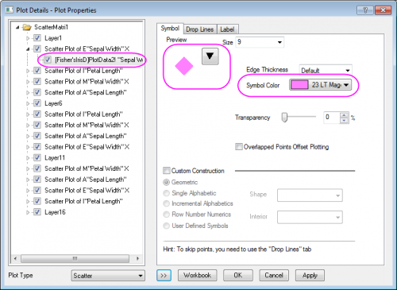
- Um den Musterstil des Histogramms benutzerdefiniert anzupassen, gehen Sie zur Zeichnungsebene unter Layer1 und wählen Sie die Registerkarte Muster. Setzen Sie die Rahmenfarbe auf Rot, die Füllfarbe auf Kein und Muster auf Medium, wie im folgenden Bild gezeigt. Klicken Sie auf OK.
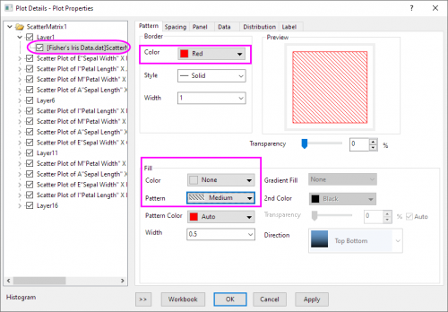
Diese Änderung wird auf alle Punktdiagramme in dieser Grafik angewendet.

- Um die Hintergrundfarbe des gesamten Fensters zu ändern, wählen Sie Format: Seite, um den Dialog Details Zeichnung zu öffnen. Auf diesen Dialog können Sie durch Doppelklick in das Fenster der Matrix von Streudiagrammen zugreifen. Klicken Sie auf der Registerkarte Anzeige auf die Auswahlliste Farbe und dann auf eine leere Farbe unterhalb von Benutzerdefiniert. Der Dialog Farbe wird geöffnet, in dem Sie benutzerdefinierte Farben definieren können.
- Legen Sie im Dialog Farbe die Farbe mit Rot = 235, Grün = 235, Blau = 255 fest. Klicken Sie auf OK.
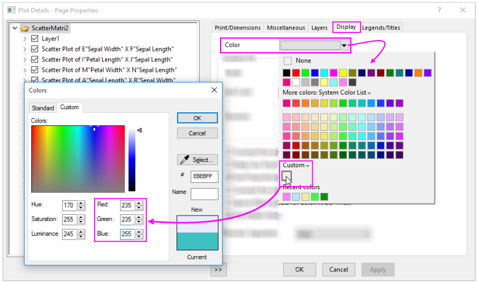
- Um die Hintergrundfarbe der Layer mit Punktdiagrammen ohne Änderung der Hintergrundfarbe der Histogramme oder des restlichen Diagramms festzulegen, klicken Sie doppelt auf ein Punktdiagramm, um den Dialog Details Zeichnung zu öffnen. Klicken Sie auf die Registerkarte Hintergrund und setzen die Farbe auf Weiß.
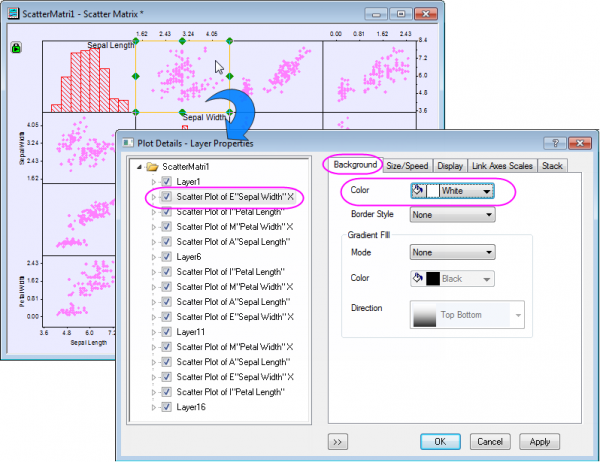
Klicken Sie auf OK. Diese Änderung wird auf alle Layer mit Punktdiagrammen angewendet.
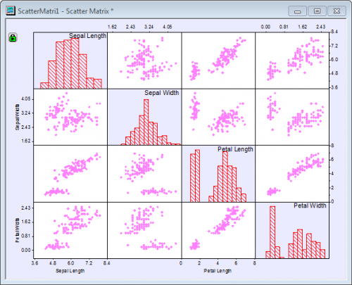
- Klicken Sie doppelt auf eine Hilfsstrichsbeschriftung im Diagramm, um den Dialog Achsen für diesen Layer zu öffnen. Gehen Sie zur Registerkarte Beschriftung der Hilfsstriche und dann zur Registerkarte Format und legen Sie die Größe mit 36 für die Achse Oben fest. Klicken Sie auf Übernehmen.
- Klicken Sie auf die Schaltfläche Anwenden auf, um den Dialog Anwenden auf zu öffnen, und nehmen Sie die folgenden Einstellungen vor, um die vorherige benutzerdefinierte Anpassung der Beschriftungsgröße der Hilfsstriche auf alle anderen Achsen in diesem Fenster anzuwenden. Klicken Sie auf OK und dann nochmal auf OK, um den Dialog Details Zeichnung zu schließen.
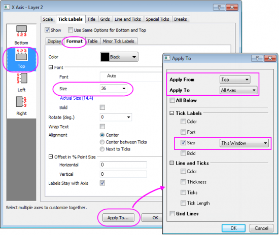
- Das Diagramm sollte jetzt folgendermaßen aussehen.
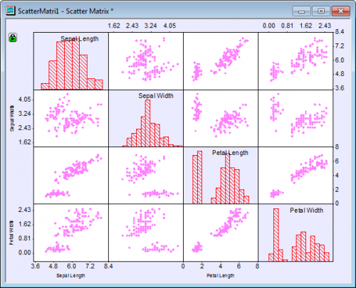
Gruppierungsbereich hinzufügen
Zurzeit zeigen unsere Punktdiagramme paarweise Vergleiche der Variablen Länge der Kelchblätter, Breite der Kelchblätter etc. Nicht in unseren Punktdiagrammen zu erkennen ist, dass die Messungen bei drei Arten der Iris vorgenommen wurden. Da alle Punkt gleich aussehen, können wir nicht zwischen den Arten unterscheiden. Wir werden die Spalte Species in unserem ursprünglichen Arbeitsblatt verwenden -- die Spalte, die wir beim Erstellen des Diagramms nicht verwendet haben --, um jeden Punkt zu färben, so dass wir den Effekt der Arten in unseren paarweisen Vergleichen sehen können.
- Um Informationen zu den Arten in unser Diagramm einzufügen, klicken Sie auf das grüne Schlosssymbol in der oberen linken Ecke des Diagrammfensters. Wählen Sie Parameter ändern, um den Dialog Plotting: plot_matrix aufzurufen.
- Klicken Sie auf die dreieckige Schaltfläche
 neben Gruppierungsbereich und wählen Sie E(Y): Species. Klicken Sie dann auf OK.
neben Gruppierungsbereich und wählen Sie E(Y): Species. Klicken Sie dann auf OK.
- Klicken Sie im Dialog Plotting: plot_matrix auf OK. Das Diagramm sollte jetzt folgendermaßen aussehen.
-
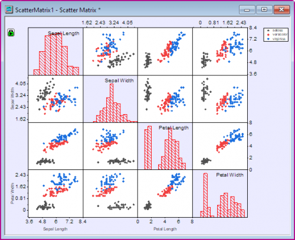
Matrixanzeige benutzerdefiniert anpassen
Eine Anzeigeoption der Matrix von Streudiagrammen ist das Verbergen der Hälfte der Punktdiagramme (da sie nur die gleichen Informationen wiederholen, die auch die andere Hälfte der Punktdiagramme zeigen).
- Um die Layer unter der Diagonalen in der Matrix von Streudiagrammen zu verbergen, klicken Sie auf das grüne Schloss oben links. Wählen Sie Parameter ändern, um den Dialog Plotting: plot_matrix aufzurufen.
- Im Zweig Matrixprofil des Dialogs:
- Wählen Sie Oberes Dreieck in der Auswahlliste Matrixanzeige.
- Wählen Sie Alle in der Auswahlliste Hilfsstriche und Beschriftung zeigen.
- Geben Sie 2 in dem Textfeld Abstand (in % der Seitendimension) ein.
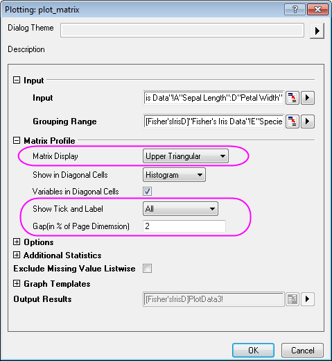
Das Diagramm sollte am Ende folgendermaßen aussehen.